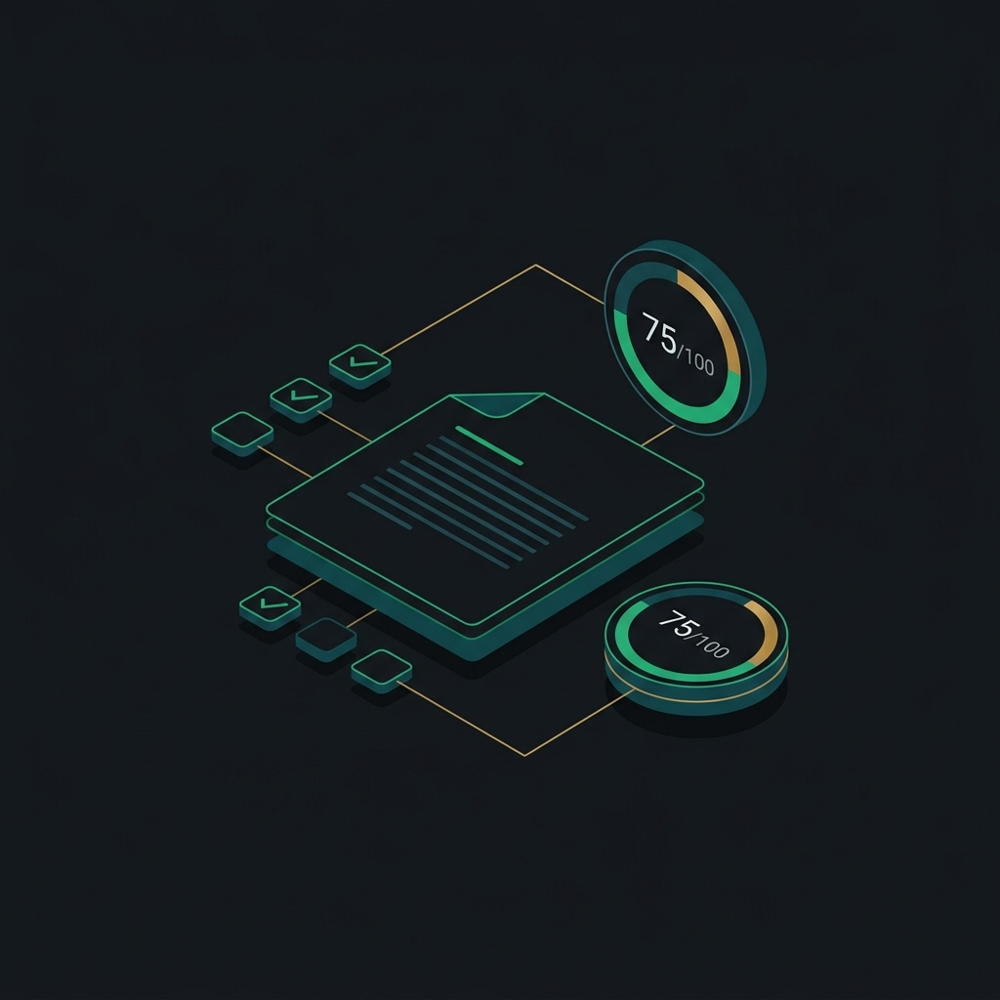

Upload files or use examples
Add tender/RFP files or run example files to explore prepared results.
Upload tender files or run the example. TenderLens will then fill this workspace with a score, checklist, evidence, map, deck, and questions.

Your overall score and executive summary will appear here after TenderLens checks the files.